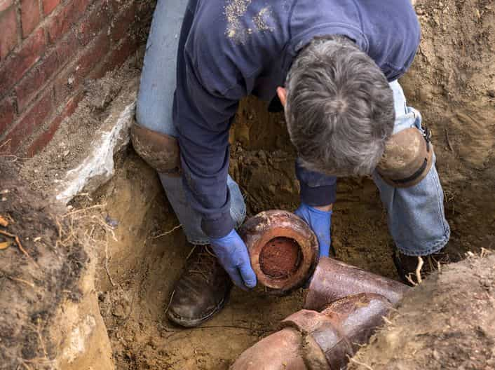
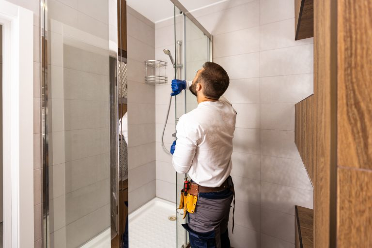

Drain Cleaning
Clogged drain repair, clogged toilet repair, floor drain back-up, and grease trap repair. We have the tools and experience to clear your drain safely and quickly. Basement backups diagnosed with camera inspection technology.

Pipe Leak Repair & Replacement
A pipe leak can cause serious water damage if not addressed quickly. Shut off the water first, then call us. We repair or replace all types of pipes — water lines, sewer lines, water mains — and restore your service fast.

Frozen Pipe Repair
Working in Rochester Hills for over 20 years, we know Michigan winters and frozen pipes. We respond fast to burst pipes and minimize water damage. We also advise homeowners on dripping faucets, open cabinet tips, and other prevention strategies.

Water Heater Repair & Replacement
We service all makes and models. We carry parts on our trucks so most repairs are done in a single visit. New water heater installations come with a full warranty from us and the manufacturer.

Faucet, Fixture & Disposal
Leaky faucet repair and replacement, shower and tub faucet repair, garbage disposal repair and installation, instant hot installation, new appliance installation, refrigerator water lines, and more. We work with all major brands.

Emergency Plumbing
We offer 24-hour emergency plumbing service. Call us anytime for burst pipes, major leaks, or any urgent plumbing situation. We will get a plumber to you as quickly as possible and can assist with insurance claims for property damage.

Sewer Line & Water Main
Sewer line installation, water main repairs, and leaking valve repair and replacement. Camera inspection technology pinpoints the location of blockages or breaks quickly — minimizing the time and cost of the repair.

Plumbing Installations
New kitchens, bathrooms, laundry rooms — we handle it all. We also do smaller installations: garbage disposals, instant-hot units, refrigerator lines, new water heaters. Most come with a full warranty from us and the manufacturer.

Commercial Plumbing
We are as comfortable in commercial locations as residential. Offices, retail, restaurants, warehouses — our 20+ years of experience lets us handle virtually any commercial plumbing project with minimal disruption to your business.
All Plumbing Services We Offer
- Clogged Drain Repair
- Clogged Toilet Repair
- Floor Drain Back-up
- Grease Trap Repair
- Toilet Repair & Replacement
- Leaky Faucet Repair
- Water Heater Repair
- Pipe Leak Repair
- Frozen Pipe Repair
- Garbage Disposal Repair
- Garbage Disposal Installation
- Instant Hot Installation
- New Appliance Installation
- Shower & Tub Faucet Repair
- Water Line Repair & Replace
- Leaking Valve Repair
- Sewer Line Installation
- Water Main Repairs
- 24-Hour Emergency Service
Don’t See What You Need?
If there is anything you are looking for that is not on this list, feel free to contact us. We respond within 1 business hour.
Call 248-988-9816